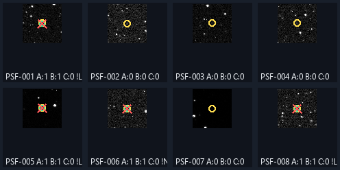
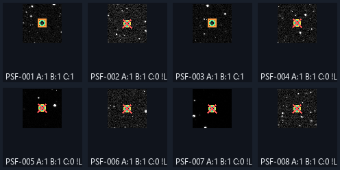
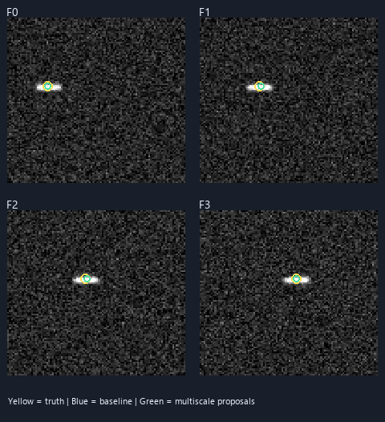
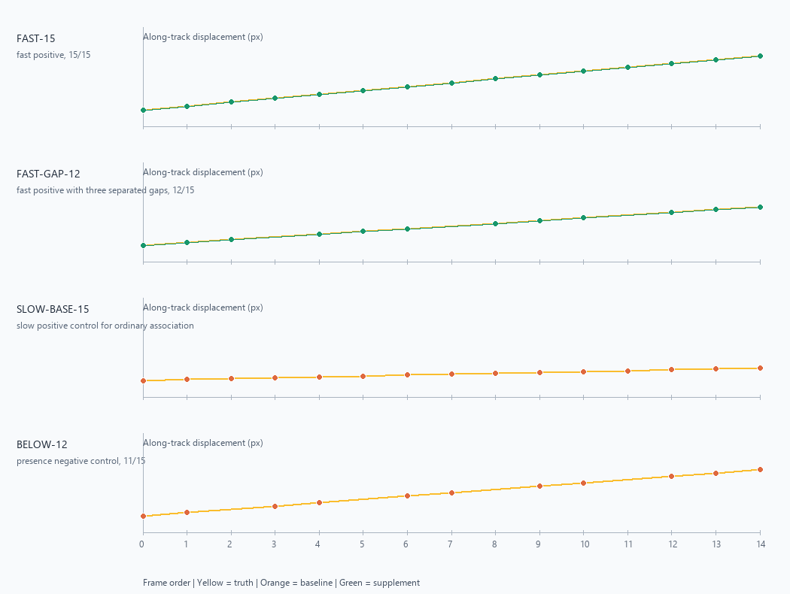
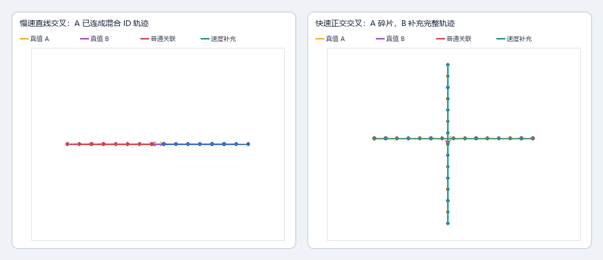
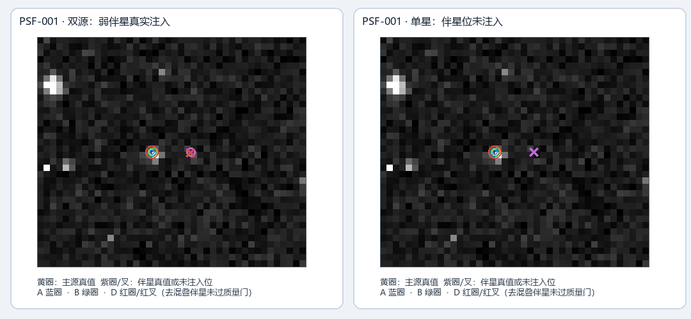

统一条件下的检测与运动算法消融
点源实验在同一真实 FITS 背景上冻结注入位置和图像，比较 Gaussian 基线、多尺度 DoG 提案及现有质量门；运动提案像素实验与轨迹关联实验各自使用冻结输入作配对比较。
点源 A/B/C：真实 FITS 已运行 拥挤配对：真实 FITS 8 块 交叉轨迹：合成 Detection 关联测试 运动结果按各自输入边界解读
真实输入：20260330163205413_9901.fits · SHA-256：6d6926a0546a5e2d28c6e76762bf72127ff3f0e37b589993eb381881bfe0acc6 · 运行时间：182.2 秒
1. 本次完成了什么
已实现共享输入的实验编排，冻结 float32 控制图、各信号档注入图、目标坐标、随机种子和生效参数；逐个目标导出 A/B/C 命中、质心偏差及质量拒绝原因。真实 FITS 运行完成，具体结果见下表。另在同一真实 FITS 的 8 个冻结背景块完成拥挤双源与单星阴性位对照。 交叉轨迹使用合成 Detection 记录，只验证关联行为，不包含像素检测或物理身份判定。
2. 实验为什么公平
同一 float32 控制图→固定目标 ID、坐标、PSF
分别生成冻结注入图→A / B / C 读取
完全相同的图像→同一半径
一对一匹配
- A：Gaussian 候选提案基线。
- B：只把提案扩展为 Gaussian + DoG；候选阈值、FWHM、测量和背景规则不变。
- C：不重跑检测，直接对同一 B 候选池应用现有
quality_passed质量门；拒绝旗标保留。
在 8 个固定注入位置附近，A/B/C 无注入控制均为零候选。实际匹配半径是 3.0 px；规则为最近距离优先的一对一分配。
本次 C 质量门实际规则：净通量 SNR ≥ 5.0；FWHM ∈ [0.8, 12.0] px；椭率 ≤ 0.65；sharpness ∈ (0.005, 0.85)；足迹像素 ≥ 2；3×3 核心 PSF 支持像素 ≥ 3；并执行数据有效性、边缘/掩膜与线状伪迹筛查。每个目标的拒绝旗标见逐目标 CSV，完整实际参数在 manifest。
无注入负对照：A/B/C 处理同一 float32 控制图
| 版本 | 检测候选峰数 | 返回候选数 | 质量通过数 | 该版本输出数 | 目标邻域候选数 | 用时 |
|---|---|---|---|---|---|---|
| A 基线 Gaussian 提案 | 81286 | 81286 | 28711 | 81286 | 0 | 15.6 s |
| B Gaussian+DoG 多尺度提案 | 84617 | 84617 | 29009 | 84617 | 0 | 22.4 s |
| C 对 B 候选应用现有质量门 | 84617 | 84617 | 29009 | 29009 | 0 | 22.4 s |
候选总量是未标注图像背景中的算法输出，不能当作假阳性或误检率；C 复用 B 的候选对象。
3. 主要结果：逐信号强度配对
振幅指连续 Gaussian 在亚像素质心处的模型中心振幅；斜线后列出 8 个固定位置对应的理论最高采样像素增量范围。召回写成命中数／注入数。区间为逐目标 Wilson 95% 描述区间；同一图像上的位置和多个信号档相关，因此不能据此做独立样本总体推断。
| Gaussian 中心振幅 / 理论最高采样像素增量范围（ADU） | 版本 | 命中／目标数（召回） | Wilson 95% 区间* | 定位误差中位数 / P90（px） | 未回收 | 候选检测耗时（C 复用 B；门控未单独计时） |
|---|---|---|---|---|---|---|
| 12 / 10.09–11.94 ADU | A 基线 Gaussian 提案 | 0/8 (0.000) | [0.000, 0.324] | — / — | 8 | 16.0 s |
| 12 / 10.09–11.94 ADU | B Gaussian+DoG 多尺度提案 | 0/8 (0.000) | [0.000, 0.324] | — / — | 8 | 22.6 s |
| 12 / 10.09–11.94 ADU | C 对 B 候选应用现有质量门 | 0/8 (0.000) | [0.000, 0.324] | — / — | 8 | 22.6 s |
| 24 / 20.18–23.87 ADU | A 基线 Gaussian 提案 | 4/8 (0.500) | [0.215, 0.785] | 0.387 / 0.632 | 4 | 15.9 s |
| 24 / 20.18–23.87 ADU | B Gaussian+DoG 多尺度提案 | 4/8 (0.500) | [0.215, 0.785] | 0.387 / 0.632 | 4 | 22.4 s |
| 24 / 20.18–23.87 ADU | C 对 B 候选应用现有质量门 | 0/8 (0.000) | [0.000, 0.324] | — / — | 8 | 22.4 s |
| 56 / 47.08–55.71 ADU | A 基线 Gaussian 提案 | 8/8 (1.000) | [0.676, 1.000] | 0.175 / 0.424 | 0 | 16.1 s |
| 56 / 47.08–55.71 ADU | B Gaussian+DoG 多尺度提案 | 8/8 (1.000) | [0.676, 1.000] | 0.175 / 0.424 | 0 | 22.6 s |
| 56 / 47.08–55.71 ADU | C 对 B 候选应用现有质量门 | 2/8 (0.250) | [0.071, 0.591] | 0.259 / 0.356 | 6 | 22.6 s |
质量门的配对变化
12 ADU：B 0/8 → C 0/8，质量门损失 0/0 候选命中。 24 ADU：B 4/8 → C 0/8，质量门损失 4/4 候选命中。 56 ADU：B 8/8 → C 2/8，质量门损失 6/8 候选命中。
额外候选仅统计目标匹配半径内一对一分配后剩余的候选，不称作假阳性。未标注背景中的其他候选也没有用于计算精确率或误检率。
4. 具体注入目标对比
每张图展示该信号档全部固定注入点；标题中的 A/B/C 表示相应版本是否命中，质量门拒绝时保留标记和拒绝旗标。各信号档的召回与质量门变化以对应表格为准。
12 ADU

24 ADU

56 ADU

目标命中与质量门结果使用固定匹配半径；图中 C 复用同一个 B 检测对象，未再次定位。
5. 这些结果能证明什么
由于同一组坐标重复测试多个强度，样本之间有关联。本轮是可复核的算法工程对照，不作为广泛天文总体结论或物理解释。
6. 运动多尺度提案：像素级配对对照
A 关闭、B 开启 multiscale_line_proposals；两版读取逐帧相同的冻结 float32 像素数组、共用固定背景时间参考、原图形态门和运动关联器。目标是低峰、有限曝光 Gaussian-PSF 线段；每个版本另在同一噪声帧上运行无注入控制。
| 场景 | 版本 | 逐帧线候选总数 | 运动轨迹数 | 目标命中帧 | 完整目标回收 | 定位误差中位数 / P90（px） | 用时 |
|---|---|---|---|---|---|---|---|
| no_injection_control | A 基础线提案 | 0 | 0 | — | — | — / — | 0.00 s |
| no_injection_control | B 多尺度运动线提案 | 0 | 0 | — | — | — / — | 0.00 s |
| low_peak_moving_trail | A 基础线提案 | 0 | 0 | 0/4 | False | — / — | 0.00 s |
| low_peak_moving_trail | B 多尺度运动线提案 | 4 | 1 | 4/4 | True | 0.5 / 1.0 | 0.73 s |

该实验验证的是现有像素级运动提案代码在这组 96×96 合成帧上的机制行为，不是原始 FITS 上真实运动目标的检测结果。无注入噪声帧的候选数是小型控制观测，不代表完整画面的误检率；本轮没有测试交叉轨迹或拥挤身份交换。
可重跑命令：uv run rst19-motion-proposal-ablation --point-run-dir "deliverables/ablation/evidence/point" --association-run-dir "deliverables/ablation/evidence/motion" --out-dir "tmp/ablation/motion-proposal-rerun" --seed 19019。本次命令：C:\Users\lycohana\Desktop\rst19\.venv\Scripts\rst19-motion-proposal-ablation --point-run-dir tmp\ablation\point-final-unified-r3-20261012 --association-run-dir tmp\ablation\motion-final-unified-r3-20261012 --out-dir tmp\ablation\motion-proposal-final-unified-r3-20261012 --seed 19019 --report deliverables\ablation\index.html
7. 运动约束：独立的轨迹关联对照
该实验冻结同一逐帧质量源列表，A 使用普通最近邻轨迹关联，B 在保留 A 多帧轨迹的同时，对未被 A 串联的质量点运行速度预测补充关联。轨迹真值按每帧实际观测时间生成，速度以中位相邻帧间隔归一化；图中横轴按帧序显示。注入对象是逐帧 Detection 记录，不重新经过图像像素检测；因此它验证的是关联阶段，不是运动目标的像素检出能力。
| 固定真值轨迹 | 角色 | 有效观测／总帧数 | A 普通关联精确轨迹 | A 关联碎片数 | B 速度补充精确轨迹 | B 最佳补充点数 | B 是否关联到背景源 |
|---|---|---|---|---|---|---|---|
| FAST-15 | 快速正例，15/15 | 15/15 | False | 15 | True | 15/15 | False |
| FAST-GAP-12 | 快速正例，3 个分散缺帧，12/15 | 12/15 | False | 12 | True | 12/12 | False |
| SLOW-BASE-15 | 慢速普通关联正例，15/15 | 15/15 | True | 1 | False | 0/15 | False |
| BELOW-12 | 持续性负例，11/15 | 11/15 | False | 11 | False | 0/11 | False |
真值含 15/15 快速正例、带 3 个分散缺帧的 12/15 快速正例、15/15 慢速基线正例和 11/15 的持续性负例。统一参数：普通关联半径 4 px、最少 12 帧；补充层 SNR ≥ 7、速度上限 20 px/参考间隔、预测门 4.5 px、拟合 RMS ≤ 1.5 px。缓存重算配准相对已保存平移的最大偏差为 0.0000 px；逐帧质量点数和 15 个原始 FITS SHA-256 已核验。

橙点表示普通关联中目标的点，绿线表示速度预测补充轨迹，黄线表示注入真值。背景污染仅检查轨迹是否混入该冻结质量源列表中的其它检测 ID；11/15 负例用于验证 min_presence 门，不是全图误报率估计。
本次实际命令：
C:\Users\lycohana\Desktop\rst19\.venv\Scripts\rst19-motion-ablation --cache C:\Users\lycohana\Desktop\rst19\.rst19-cache\3cbeaf34b7381421ab13d688048b6eaa1a084da0c91cf0862800759e9e52a955.sequence.json.gz --point-run-dir tmp\ablation\point-final-unified-r3-20261012 --out-dir tmp\ablation\motion-final-unified-r3-20261012 --report deliverables\ablation\index.html --seed 19019 --min-presence 12 --link-radius-px 4 --registration-radius-px 8 --min-flux-snr 7 --max-step-px 20 --prediction-gate-px 4.5 --max-fit-rms-px 1.5- 运动关联参数、来源哈希和运行耗时 manifest.json
- 逐轨迹结果 trajectory_results.csv
- A/B 配对摘要 motion_pairing.csv
- 冻结真值轨迹 truth_trajectories.json
- 送入两种关联器的冻结逐帧源列表
缓存：C:\Users\lycohana\Desktop\rst19\.rst19-cache\3cbeaf34b7381421ab13d688048b6eaa1a084da0c91cf0862800759e9e52a955.sequence.json.gz · SHA-256：faad5e153b6e4991b5558fed1dd1f291ae74a43eba2c665275183beb9b0bfc85 · 实验目录：C:\Users\lycohana\Desktop\rst19\tmp\ablation\motion-final-unified-r3-20261012
8. 交叉轨迹：速度补充能做与不能做的事
此项冻结两组 15 帧 Detection 记录和逐帧真值 ID，24 个固定锚点使注册累计位移为 0；A、B 读入的源列表 fingerprint 相同。它只测关联器，不重新运行图像检测。
| 场景 | 版本 | 有完整纯净真值轨迹 | ID 切换 | 混合 ID 轨迹 | 目标碎片赋值总数 | 重复真值观测赋值 |
|---|---|---|---|---|---|---|
| 慢速直线交叉：A 已错连 | A 普通关联 | 0/2 | 2 | 2 | 4 | 0 |
| 慢速直线交叉：A 已错连 | B 速度补充 | 0/2 | 0 | 0 | 0 | 0 |
| 慢速直线交叉：A 已错连 | A+B 并集 | 0/2 | 2 | 2 | 4 | 0 |
| 快速正交交叉：A 半径不足 | A 普通关联 | 0/2 | 0 | 0 | 30 | 0 |
| 快速正交交叉：A 半径不足 | B 速度补充 | 2/2 | 0 | 0 | 2 | 0 |
| 快速正交交叉：A 半径不足 | A+B 并集 | 2/2 | 0 | 0 | 32 | 30 |

慢速直线交叉中，A 已把两个身份错接；补充层 B 因这些点已被 A 的多帧轨迹占用，新增 0 条轨迹，无法修正 2 次 ID 切换。快速正交交叉中，A 的 4 px 半径产生 30 个单点碎片，B 单独补出 2/2 条纯净轨迹；但 A+B 并集保留了 30 个重复观测赋值。因此现有 B 证明的是“补回尚未被 A 串起的快速轨迹”，不是可替换 A 的纠错关联器，也不是去重后的完整系统收益。
输入是合成的像素坐标与 Detection 属性，没有经过图像检出，也不证明现实天体的身份。结果仅用于揭示关联策略边界。
本次实际命令：C:\Users\lycohana\Desktop\rst19\.venv\Scripts\rst19-motion-crossing-ablation --out-dir tmp/ablation/motion-crossing-final-unified-20261012-r4
9. 拥挤双源与单星阴性对照
从同一真实 FITS 选取并冻结 8 个 96×96 背景块；每块派生成一组亮主源+弱伴星，以及只注入主源的配对图。主源为 160 ADU、FWHM 1.4 px，伴星为 40 ADU、FWHM 0.8 px，间隔 6.0 px，匹配半径 3.0 px。所有版本对同一个冻结输入文件运行；C 复用 B 的候选并只保留通过质量门的源，D 是独立的 Gaussian+局部去混叠单帧条件。
| 场景 | 版本 | 注入真值候选回收 | 质量通过回收 | 单星对照伴星位候选 | 定位误差中位数 / P90（px） | 每块中位耗时 |
|---|---|---|---|---|---|---|
| pair | A Gaussian 基线 | 8/16 (0.500) | 8/16 (0.500) | — | 0.054 / 0.085 | 0.01 s |
| pair | B Gaussian+DoG 多尺度提案 | 8/16 (0.500) | 8/16 (0.500) | — | 0.054 / 0.085 | 0.01 s |
| pair | C B 候选通过现有质量门 | 8/16 (0.500) | 8/16 (0.500) | — | 0.054 / 0.085 | 0.01 s |
| pair | D Gaussian+局部去混叠候选 | 15/16 (0.938) | 8/16 (0.500) | — | 0.093 / 0.191 | 0.01 s |
| single | A Gaussian 基线 | 8/8 (1.000) | 8/8 (1.000) | 0/8 | 0.056 / 0.084 | 0.01 s |
| single | B Gaussian+DoG 多尺度提案 | 8/8 (1.000) | 8/8 (1.000) | 0/8 | 0.056 / 0.084 | 0.01 s |
| single | C B 候选通过现有质量门 | 8/8 (1.000) | 8/8 (1.000) | 0/8 | 0.056 / 0.084 | 0.01 s |
| single | D Gaussian+局部去混叠候选 | 8/8 (1.000) | 8/8 (1.000) | 0/8 | 0.056 / 0.084 | 0.01 s |

单星场景的伴星坐标是预先标记的“未注入伴星位”，只用于观察局部误拆；它不代表附近天区没有真实结构。候选回收与质量通过回收分开报告，因此弱伴星被提案但遭质量门拒绝时不会被写成已确认源。
本次实际命令：C:\Users\lycohana\Desktop\rst19\.venv\Scripts\rst19-crowded-ablation doc/00-项目资料/原始数据/20260330163205413_9901.fits --reuse-manifest tmp/ablation/point-final-unified-r3-20261012/manifest.json --point-run-dir tmp/ablation/point-final-unified-r3-20261012 --motion-run-dir tmp/ablation/motion-final-unified-r3-20261012 --motion-proposal-run-dir tmp/ablation/motion-proposal-final-unified-r3-20261012 --motion-crossing-run-dir tmp/ablation/motion-crossing-final-unified-20261012-r4 --demo-summary deliverables/ablation/evidence/demo/summary.json --out-dir tmp/ablation/crowded-final-unified-20261012-r2 --report deliverables/ablation/index.html
- 配置、哈希、实际检测参数和限制
- 按场景和版本汇总
- 逐背景块指标
- 逐目标候选、质量门、定位与阴性位结果
- 无注入候选冲突筛选
- 逐次 detector 输入哈希、参数、候选数与耗时
- PSF-001-base-float32.npy
- PSF-001-pair-float32.npy
- PSF-001-single-float32.npy
- PSF-002-base-float32.npy
- PSF-002-pair-float32.npy
- PSF-002-single-float32.npy
- PSF-003-base-float32.npy
- PSF-003-pair-float32.npy
- PSF-003-single-float32.npy
- PSF-004-base-float32.npy
- PSF-004-pair-float32.npy
- PSF-004-single-float32.npy
- PSF-005-base-float32.npy
- PSF-005-pair-float32.npy
- PSF-005-single-float32.npy
- PSF-006-base-float32.npy
- PSF-006-pair-float32.npy
- PSF-006-single-float32.npy
- PSF-007-base-float32.npy
- PSF-007-pair-float32.npy
- PSF-007-single-float32.npy
- PSF-008-base-float32.npy
- PSF-008-pair-float32.npy
- PSF-008-single-float32.npy
10. 比赛如何呈现
7 分钟陈述可用的核心结论
24 ADU：A 4/8，B 4/8，C 0/8；B 定位误差中位数 0.387 px。 56 ADU：A 8/8，B 8/8，C 2/8；B 定位误差中位数 0.175 px。 A/B/C 的差异按本表中的输入和参数解读；这些结果不外推为完整星图精确率或真实恒星总体完备率。运动实验分别说明像素提案与检测后轨迹关联的证据边界。不要把候选总数说成真实星数。
拥挤对照：D 候选层回收 15/16，质量后为 8/16；单星阴性位候选 0/8。 交叉关联边界：慢速交叉 A 有 2 次身份切换且 B 无法修复；快速交叉的 B 补充轨迹为 2/2，并集仍有 30 条重复观测赋值。
3 分钟程序演示实测
本机实测单帧 CLI 正常识别：输入 4096×4096 FITS，端到端 24.6 秒，退出码 0；候选峰 66469，质量通过 27553。结果 JSON SHA-256：4717e6384fba68470bdfc25bebe6579b8594f7698ab67e648d8f7dbd8273d752。
计时从 CLI 进程启动到完整 JSON 写盘；这是单帧正常识别命令，不代表 GUI 总时长或 15 帧序列分析时长。原始 JSON 未纳入交付，摘要保留于 evidence/demo/summary.json。
建议的 3 分钟现场顺序
- 0:00–0:25：说明输入 FITS、当前参数和候选／质量通过两层输出。
- 0:25–0:55：现场运行已实测的正常单帧 CLI（实际命令：
rst19.exe doc\00-项目资料\原始数据\20260330163205413_9901.fits --json-out tmp\ablation\live-demo-final-r3-20261012\recognition.json）；记录耗时约 24.6 秒。 - 0:55–1:30：打开 JSON 结果，指出候选数和质量通过数是算法输出，不等于真实星数。
- 1:30–2:30：打开本报告的预先完成配对案例，讲一个质量门误拒绝或交叉关联边界。
- 2:30–3:00：用真实测得的召回和限制收尾。完整消融约需数分钟，现场展示预先冻结的实验结果，不声称三分钟内重新完成全部消融。
11. 复现与原始证据
本次实际命令：
C:\Users\lycohana\Desktop\rst19\.venv\Scripts\rst19-ablation doc\00-项目资料\原始数据\20260330163205413_9901.fits --out-dir tmp\ablation\point-final-unified-r3-20261012 --report deliverables\ablation\index.html --peak-levels 12 24 56 --targets 8 --seed 19019 --psf-fwhm 2 --injected-psf-fwhm 2 --threshold-sigma 4 --min-distance 4 --aperture-radius 4 --background-box-size 128 --min-flux-snr 5 --min-psf-support-pixels 3 --match-radius-px 3 --reuse-manifest deliverables\ablation\evidence\point\manifest.json使用 manifest 中冻结坐标重放：
uv run rst19-ablation "doc/00-项目资料/原始数据/20260330163205413_9901.fits" --targets 8 --seed 19019 --peak-levels 12 24 56 --psf-fwhm 2 --injected-psf-fwhm 2 --threshold-sigma 4 --min-distance 4 --aperture-radius 4 --background-box-size 128 --min-flux-snr 5 --min-psf-support-pixels 3 --match-radius-px 3 --reuse-manifest "deliverables/ablation/evidence/point/manifest.json" --out-dir "tmp/ablation/replay-rerun" --report "tmp/ablation/replay-rerun/report.html"- 完整配置、哈希、真实生效参数和耗时 manifest.json
- 按版本和信号档汇总 summary.csv
- 无注入 A/B/C 对照 control_summary.csv
- 逐目标命中、定位和拒绝原因 target_results.csv
- cases-12-adu.png / cases-24-adu.png / cases-56-adu.png
- 单帧程序演示摘要与输出哈希


摘要、逐目标 CSV、无注入 A/B/C 控制表和三档案例图随交付报告保存。较大的冻结点源图像保存在本机 ignored tmp 目录，并可由命令重新生成。重放需要同一原始 FITS 输入并核对 SHA-256；该本地观测数据未纳入 Git。原始 FITS：doc/00-项目资料/原始数据/20260330163205413_9901.fits · SHA-256：6d6926a0546a5e2d28c6e76762bf72127ff3f0e37b589993eb381881bfe0acc6。
实验输出目录：C:\Users\lycohana\Desktop\rst19\tmp\ablation\point-final-unified-r3-20261012 · 报告生成时间：2026-10-12T01:38:07+08:00